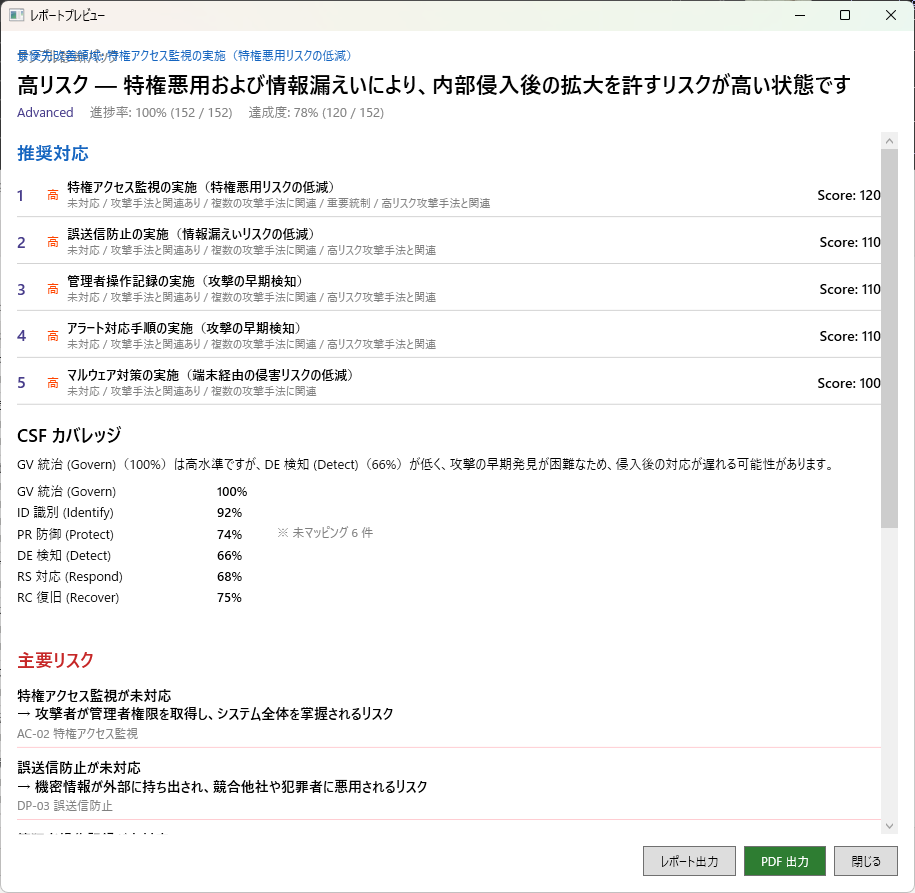
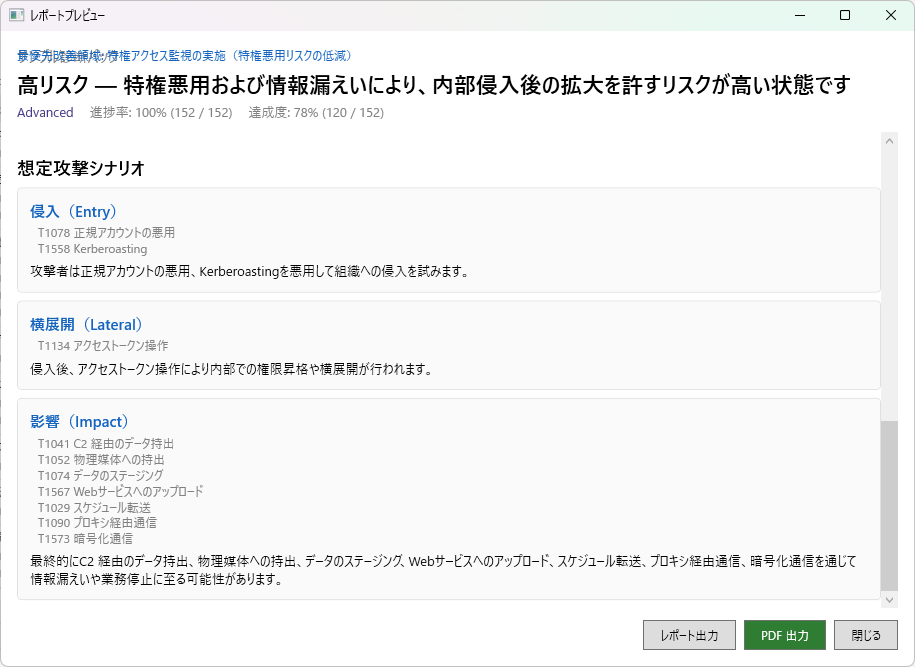
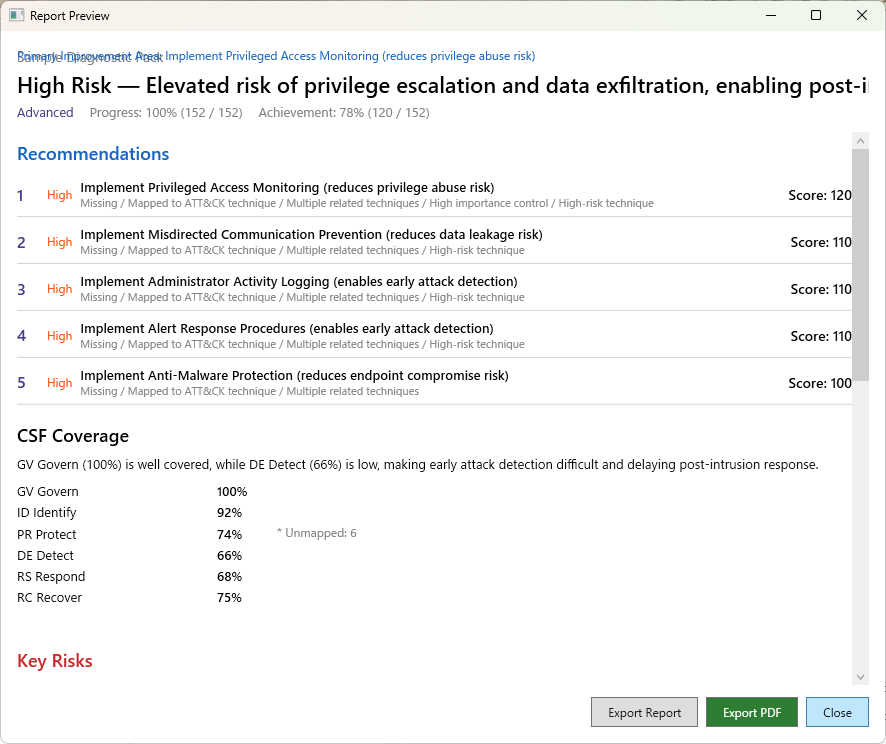
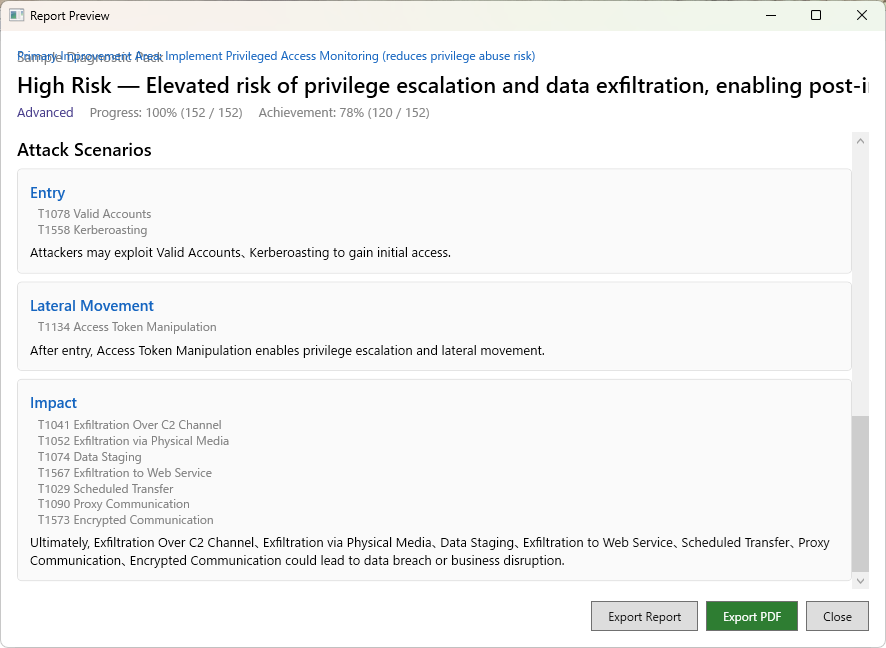

簡易レポート・完全レポート、PDF エクスポート
レポート画面では、診断結果をレポート形式でプレビューできます。レポートの内容はエディション（Free / Pro）によって異なります。

Free 版では、診断結果の概要を簡易レポートとして画面上でプレビューできます。簡易レポートには以下の内容が含まれます。
Free 版では画面上でのプレビューのみ利用可能です。PDF ファイルとしてエクスポートするには Pro 版が必要です。
Pro 版では、経営層や監査対応に使用できるコンサルタントレベルの完全レポートを生成できます。完全レポートには、簡易レポートの内容に加えて以下が含まれます。

Pro 版では、レポートを PDF ファイルとしてエクスポートできます。エクスポートされた PDF は、経営層への報告、社内会議での共有、監査対応の資料として利用できます。
PDF エクスポートには WebView2 Runtime が必要です。通常は Windows に同梱されていますが、環境によっては別途インストールが必要な場合があります。詳しくはトラブルシューティングを参照してください。
Simplified and full reports, PDF export
The Report screen lets you preview assessment results in a report format. The report content varies depending on your edition (Free or Pro).

The Free edition provides an on-screen preview of the assessment results as a simplified report. The simplified report includes:
The Free edition only supports on-screen preview. Exporting as a PDF file requires the Pro edition.
The Pro edition generates a consultant-grade full report suitable for executive presentations and audit responses. In addition to the simplified report content, the full report includes:

The Pro edition allows you to export reports as PDF files. The exported PDF can be used for executive presentations, internal meetings, and audit documentation.
PDF export requires the WebView2 Runtime. It is typically bundled with Windows, but may need to be installed separately in some environments. See Troubleshooting for details.